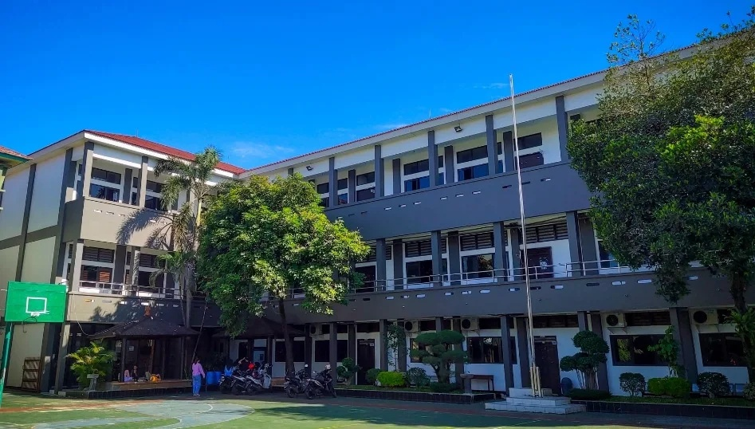

|
Website NaufalBelajar, berkembang, dan berkarya melalui teknologi.
|
|
| Beranda | Tentang Saya | Kampusku | Syair Lagu | |
KampuskuSTMIK PGRI TANGERANG Yayasan Pembina Lembaga Pendidikan Tinggi PGRI, yang dikenal sebagai YPLPT PGRI, aktif berpartisipasi dalam pengembangan pendidikan di Indonesia melalui berbagai lembaga pendidikan, mulai dari Sekolah Dasar (SD), Sekolah Menengah Pertama (SMP), Sekolah Menengah Atas (SMA), hingga Sekolah Menengah Kejuruan (SMK) dan Perguruan Tinggi. A kademi Manajemen Informatika dan Komputer (AMIK) PGRI Tangerang didirikan pada 28 Januari 2001 dengan izin operasional dari Mendiknas Nomor 20/D/O/2001. Menyikapi tuntutan sumber daya manusia, Yayasan Pendidikan Tinggi PGRI telah melangkah lebih jauh dengan mendirikan Sekolah Tinggi Manajemen Informatika dan Komputer (STMIK) PGRI Tangerang yang memperoleh izin operasional 35/D/O/2001. Pada tahun 2008, Program Studi Sistem Informasi dan Teknik Informatika telah terakreditasi oleh BAN-PT. STMIK PGRI Tangerang saat itu diketuai oleh Prof. Dr. H. Aris Gumilar, MM. Seiring perkembangan zaman dan kebutuhan akan sumber daya manusia yang terampil dan profesional, Yayasan Pendidikan Tinggi PGRI Tangerang terus berupaya memperbaiki dan mengembangkan program-program pendidikan dengan biaya terjangkau. STMIK PGRI Tangerang adalah lembaga pendidikan komputer yang berada di bawah naungan Yayasan Pendidikan Tinggi PGRI. Yayasan ini mengemban misi luhur yang terkandung dalam Pembukaan Undang-undang Dasar 1945, yaitu mencerdaskan kehidupan bangsa Indonesia. Melaksanakan misi tersebut adalah tanggung jawab setiap warga negara terhadap negara dan bangsa, khususnya di bidang pendidikan. Yayasan Pendidikan Tinggi PGRI Tangerang menyediakan Program Diploma Tiga (D3) dan Strata Satu (S1). STMIK PGRI Tangerang menawarkan program studi Strata Satu (S1) dalam bidang Sistem Informasi dan Teknik Informatika. Informasi lebih rinci tentang STMIK PGRI Tangerang dapat dilihat di Pangkalan Data Pendidikan Tinggi (PDDikti). |
Tautan Eksternal |
|
© Copyright Naufal Abiyu Rifdan, 2026. |
|